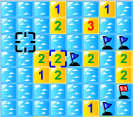
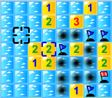
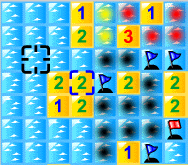
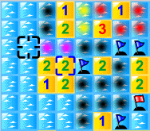
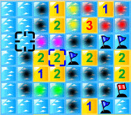
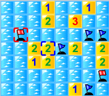

マインスイーパフラグの戦略研究ページ
とつげき東北は、マインスイーパフラグをするにあたって思考・開発した数理的戦略を、メモ帳にメモっていた。
それを、友達の要請によってhtml文書としたのがこのページである。読みやすさなどは全く考慮されていない。
凡例
Ｐ
はハタを表す。
無
は、周りの8ブロックに1つもハタのないマスを表す。
１、２、・・・、８
は、その数だけ周りにハタのあるマスを表す。
×
は、「考慮する必要がないマス」であることを示す。
例：
×
×１１
×
これは、
Ｐ
Ｐ４１
Ｐ
と等価であるし、
無
無２１
Ｐ
とも等価である。
既知マス
とは、ハタが存在するかしないかがいずれかに確定しているマスを指す。
未知マス
とは、いまだハタがあるかないかが（確率的にしか）確定できないマスを指す。
未開
とは、ハタのあるなしにかかわらず、いまだ開けられていないマスを指す。
無情報のマス
とは、未開のマスであって、かつ相手にいかなる未知マスについての情報も与えないマスを指す。
オープン
とは、無かつ未開のマスをクリックすることによって、クリックしていない別のマスが開いてしまう現象を言う。
ベタオリの際に意図的にオープンする場合と区別して、失敗して相手に情報を与え得るようなオープンを「大オープン」「大ミンカン」などと呼ぶことがある。
逆に、安全なオープンを「降りオープン」などと呼ぶこともあるが、統一した呼び名はない。
ベタオリ
とは、未知マスのうちに、特に戦略上有利な置くべき場所がなく、無情報のマスを開けることで相手のミスを誘う戦略を指す。
スジ
とは、（ぱっと見）オープンの危険があるようにみせかけて、論理的にはオープンされる危険が全くないマスを指す。
例
無無
Ｐ ３ ○
無
の○の位置など。
ドヘタ
とは、マインスイーパフラグに勝つという目的のもとに、戦略的知性が著しく欠如した人物または手を形容する言葉である。
基礎の確認
■■基本的な考え方■■
練習１）
壁
壁 １１
壁×１
壁×１
壁壁壁壁壁
（×印は、「そこにハタがないと確定している」と見なせるマスを指す）
壁○ＡＡ
壁１１Ａ
壁 １Ａ
壁 １Ｂ
壁壁壁壁壁
１）○にハタがあると仮定すると、Ａにはハタがないので、Ｂにはハタがある。
壁○★Ａ
壁１１Ａ
壁 １Ａ
壁 １Ｂ
壁壁壁壁壁
２）○にハタがないと仮定すると、★にハタがあるが、このときＡにハタがないので、Ｂにはハタがある。
１）または２）なので、Ｂにはハタがある。
つまり
壁
壁１１
壁 １
壁 １
壁壁壁壁壁
の形だと、
壁
壁１１
壁 １
壁 １Ｐ
壁壁壁壁壁
Ｐにハタが存在することは確定である。
（Ｐはハタを表す）
練習２）
Ｐ２４
２の存在から考えて、
○○○
Ｐ ２ ４
○○○
この○の部分には高々あと1つだけしかハタがない（自明）。
○○○Ａ
Ｐ ２ ４ Ａ
○○○Ａ
Ａのうち1つでもハタがないマスがあるとすると、○部分に2つ以上のハタが存在しなければならないが、それは自明な事実と矛盾する。
したがって、「Ａのうち1つでもハタがないマスがある」は誤りであり、Ａの部分は全てハタである。
つまり
Ｐ２４
の形は
Ｐ
Ｐ２４Ｐ
Ｐ
が確定である。
応用練習） ※初心者には複雑なので、初心者は飛ばしてください
この種の確定的情報に基づく判断の実践例としては、次のようなものがある（上記の論理的判断の複合版なので、ゆっくり考えれば必ず解ける）。

このような場合、まずは「絶対にハタがないマス」を考える。
ここでは、黒く塗りつぶしてみよう。

「２」の周りに２つのハタがあることと、「１」の周りに１つのハタがあることから、今塗った黒いマスにはハタがないことがわかる。

赤色の部分は、赤色の中央にある「１」の存在により、高々１つのハタしかない。
そうすると、「３」の存在から考えて、黄色の部分のいずれか片方だけに１つハタがある。
（なぜなら黒い部分にはハタがなく、すでにハタが１つ見えていて、赤い部分に１つしかハタがないからである）

黄色の左上の「１」の存在と黄色いマスのいずれかにハタがあることから、「１」の左側の黒い部分にも、もうハタがないことがわかる。
次に黄色い部分にハタが１つだけあることと、黄色の左下の「２」の存在とから、紫色の部分のいずれか片方にハタが１つだけあることがわかる。

青いカーソル枠で囲った「２」の下にある「２」の存在から、画面上の緑の部分のいずれか片方には、１つだけハタがある。
そうすると、緑の上の「１」の存在から、その左側３マスの黒い部分にもハタがないことがわかる。
ここで、青いカーソル枠で囲った「２」の左にある「２」に着目すると、紫のうち片方にハタが１つだけあり、黒い部分にはハタがない。
したがって必然的に、黒いカーソル枠で囲った部分にはハタが存在しなければならない。

このようにして、ハタを見つけたり、その他のマスのどこにどのような確率でハタが埋まっているかを考えていくことができる。
■■定石■■
・定石
×１１１×
×××××
こういう場合は
○
×１１１×
×××××
ここに置く。
もちろん、本当は
Ｐ Ｐ
×１１１×
×××××
のような形であることもあるが、特定の4マスのうちに2つハタがある確率は15％しかない（この場合は数字による条件つき確率になってはいるが）。
しかも、もし○になくても相手は50％で2本取れるか、50％で外して2本取られるかなので、その分の不利はない。
・定石
Ｐ
Ｐ４
Ｐ
例えばこのような形は
×
×１
×
に単純化できる。この形では
×
×１○
×
○におく。
システマティックマインスイーパフラグ研究
■■基本演算■■
16*16=256マスに51本のハタがある
運のみで開けると、20％くらい(1/5くらい)ハタをとれる。
「1」があるマスの周りには8つのブロックがあるので、「1」と隣接したマスは爆弾がある確率が通常の場所より低い。
「2」だと2/8なので、爆弾がある確率が通常より高い。
任意の未知のｎマスに、ちょうどｍ本だけハタがある確率を考える。
nＣm（4/5）^（n-m）・（1/5）^m
=nＣm{4^(n-m)/5^n}
（表1：未知のｎマスにちょうどｍ本のハタがある確率）
| n m | 0 | 1 | 2 | 3 | 4 | 5 | 6 | 7 | 8 |
| 1 | 80 | 20 | 0 | 0 | 0 | 0 | 0 | 0 | 0.00 |
| 2 | 64 | 32 | 4 | 0 | 0 | 0 | 0 | 0 | 0 |
| 3 | 51.2 | 38.4 | 9.6 | 0.8 | 0 | 0 | 0 | 0 | 0 |
| 4 | 40.96 | 40.96 | 15.36 | 2.56 | 0.16 | 0 | 0 | 0 | 0 |
| 5 | 32.77 | 40.96 | 20.48 | 5.12 | 0.64 | 0.03 | 0 | 0 | 0 |
| 6 | 26.21 | 39.32 | 24.58 | 8.19 | 1.54 | 0.15 | 0.01 | 0 | 0 |
| 7 | 20.97 | 36.7 | 27.53 | 11.47 | 2.87 | 0.43 | 0.04 | 0 | 0 |
| 8 | 16.78 | 33.55 | 29.36 | 14.68 | 4.59 | 0.92 | 0.11 | 0.01 | 0 |
| 9 | 13.42 | 30.2 | 30.2 | 17.62 | 6.61 | 1.65 | 0.28 | 0.03 | 0 |
m=9の項目は有効数字上全て0
初手に関する研究
■初手の最善手とその受けの最善手
・初手
一般に初期状態で、ある1打のオープン確率は13.4％である（壁際を除く）。
それに対して、壁際であると26％であり、スミであると41％になる。
ゆえに、オープンの危険を考えれば、端やスミに置いてはならない。
また、もしオープンしてしまった場合に、画面の真ん中であれば４方向にオープンしてしまうが、画面の端に近ければそちら側にはオープンしないで済む。
よって、端から見て2つめであるようなマス（4つある）に置くこと。
壁壁壁壁壁
壁
壁 ★
壁
★が初手の最善手である。
・初手への受け
相手の初手が最善手である場合、
壁壁壁壁壁
壁
壁 １
壁
例えばこのように出た場合、
壁壁壁壁壁
壁
壁 １
壁 ＡＢ
壁
ＡＢのどちらが有利なのかを計算しよう。
Ａに置いた場合、たまたま１の周りのハタが８個中上の３つのどこかにあり、しかもＡの下３マスにハタがい確率が、オープンの確率を表す。
ゆえに3/8*0.512=19.2％
Ｂに置いた場合、たまたま１の周りのハタが８個中上の５つのどこかにあり、しかもＢの周囲の５マスにハタがない確率が、オープンの確率を表す。
ゆえに5/8*0.3277*4/5=20.5％
いずれにしても、
壁
壁 ★
壁
壁壁壁壁
のように、他の最善手に置くほうがオープンの確率が低い（13.4％）。
壁壁壁壁壁
壁
壁 ２
壁
と出た場合についても同様に考える。
壁壁壁壁壁
壁
壁 ２
壁 ＡＢ
Ａは3/8*2/7*0.512=5.5％
Ｂは5/8*4/7*0.3277=11.7％
ゆえに、最善手は
壁壁壁壁壁
壁
壁 ２
壁 ★
である。
単一情報に基づく戦略の研究
■Ｘマス中Ｘ−１マスが当たりの時の有利さ
例えば「７」が出ていて、そのまわりに何も情報のない空白が８マスあるとしよう。
まず、1回目に7/8の確率で当てられることは当然である。
当たった場合は、次に6/7の勝負ができる。
さらに当たれば5/6の勝負ができる。
ところがもし、最初の1回で外してしまえば（1/8）、残り7つ全て取られてしまうことになる。
結局、自分が連続で当て続けられる確率は
7/8*6/7*5/6*4/5までで0.5になるから、「勝負！」を続けていくと、半々の確率で4本までは取れるが、残り3本は取られてしまうことになる。
しかも、最初に「ハズレを引く」と取られる量が多くなるから、結局この勝負は互いに互角となる。
（厳密な計算は読者に任せる。1つだけ「ハズレ」の入ったクジを2人で引き合うとき、クジの数にかかわらず有利さは半々になることを考えよ。3本中1本「ハズレ」があり、残り全て「アタリ」であるクジがあるとする。ハズレを引いた時点でもう片方は残りのアタリをもらえると考える。ハズレを引く可能性は引く順番によらず互角なのであるから、結局手にするアタリの期待数は同じになる）
周りに何もない空白スペースをクリックして「７」などが出ると大慌てだが、結局、「アタリＸマス、ハズレ１マス」の状況であれば、どちらも有利不利はないと言える。
もちろん、「1回だけ勝負して残りは別のマスに進む」ことをしても無駄である。1回目で7/8の確率で1本取得できるが、1/8の確率で外れて残り7本を取られてしまうため、期待値は0本となり、有利にならない。格上の人と試合をしていて運のみででも1回勝ちたいなら7本狙いをする価値はあるが、実はそうしない方がトータルとしては勝てる。
■Ｘマス中Ｙマスが当たりの時の有利さ
では先ほどの話を一般化しよう。
3本中1本当たりの勝負は有利だろうか？
もしも勝負することによってそれ以上の情報を与えないのであれば、平均的に1/3本取得できる上、外れたとしても「2本中1本の勝負」に持ち込まれるだけでそれは有利でも不利でもないから、1/3本分丸まる得することになる。
従って、1/3当たり勝負は1/3本分有利である。
3本中2本当たりの勝負は？
勝負すると、2/3で1本得するが1/3で2本損し、その後は「半々の2択」になるので、有利不利はない。
4本中1本当たりの勝負は？
1つめを当てられる確率が1/4。
外した場合（3/4）、相手は自分を3本中1本の勝負に持ち込めるから、0.33本不利となる。
つまり0.25-0.25=0で、有利不利がない。
これならいっそ、空いている他のマスを攻めたほうが1/5得できるから有利である。
4本中2本当たりの勝負はどうだろうか？
1つめを当てられる確率は2/4。当てると、次は1/3当たりの勝負に持ち込め、さらに1/3本有利になる。
外れると（2/4）、3本中2本当たりの勝負になる。これは先の「Ｘマス中Ｘ−１マスが当たり」の状況であり、有利不利はない。
従って、2/4+2/4*1/3=8/12本分有利な勝負であると言える。
説明は省くが、4本中3本当たりの勝負も、有利不利が存在しない。
これらの一体何が違うのだろうか？
「3本中2本当たり」の勝負だと何も得ではないのに、「3本中1本当たり」の勝負だと得するのはなぜか？
「4本中3本もあたり」なら喜んでクリックしたいところだが、それよりは他を攻めた方が得なのはどうしてか？
「ハズレが出るごとに、その次のハズレまでの間のアタリの取得者を入れ替えるクジビキ」があった場合、ハズレの分布のしかたを考えて、有利不利を決定することができるのである。
3本中1本あたりの場合
○××
×●×
××○
2/3-1/3=1/3だけ有利である。
（なお、○は先攻者の取得するハタ、●は後攻者の取得するハタである）
3本中2本あたりの場合
○○×
○×●
×●●
有利不利はない。
4個中1つアタリがある場合
○×××
×●××
××○×
×××●
有利不利はない。
さらに複雑にして、
4個中2つアタリがある場合
○○××
○×●×
×○○×
×●×○
××○○
○××○
のような分布を考えることができる。
○の数は10個、●の数は2個だから、この勝負をすると(10-2)/12本分有利であり、先の計算と一致する。
さて、ここは数学パズルの部屋ではないので、答えだけを急いで求めよう。
A個中B個当たりのくじを先に引く人の有利さをＦ(A,B)と書くと、
Ｆ(A,B)＝(B/A)Ｆ(A-1,B-1)-(A-B／A)Ｆ(A-1,B)
が成り立つから、Ｃで実装すると有利さは次のような再帰関数を呼ぶことで求まる。
double f(double A,double B)
{
if(!(A|B)){return 0;}
return B/A+(B/A)*f(A-1,B-1)-((A-B)/A)*f(A-1,B);
}
この計算結果を表にしたのが以下の表である。
（表2：A個の空白中B個が当たりの時、先に取る方があとに取る方よりも有利な度合い）
| A B | 0 | 1 | 2 | 3 | 4 | 5 | 6 | 7 | 8 | 9 |
| 1 | 0.00 | 1 | ||||||||
| 2 | 0 | 0 | 2 | |||||||
| 3 | 0 | 0.33 | 0 | 3 | ||||||
| 4 | 0 | 0 | 0.67 | 0 | 4 | |||||
| 5 | 0 | 0.2 | 0 | 1 | 0 | 5 | ||||
| 6 | 0 | 0 | 0.4 | 0 | 1.33 | 0 | 6 | |||
| 7 | 0 | 0.14 | 0 | 0.6 | 0 | 1.67 | 0.00 | 7 | ||
| 8 | 0 | 0 | 0.29 | 0 | 0.8 | 0 | 2 | 0 | 8 | |
| 9 | 0 | 0.11 | 0 | 0.43 | 0 | 1 | 0 | 2.33 | 0.00 | 9.00 |
「A個中B個が当たりとわかっているとき、AとBの差が偶数であれば、取れば有利」
これは先の○●×の思考において、差が奇数の場合の対象性を考えれば予測できることであるが、直感とは離れた結論である。
ただしこれは、あくまでも取ったことによって他のます目の情報を与えない場合に限る。
実際には、7などであれば、取りに行くと「残り3マスにあるかどうか」などの情報が相手に知れてしまうことが多いために、有利さはほとんどなくなる。
この戦略が最も使えるのは「3個中1個」「4個中2個」「5個中1個」「5個中3個」などで、しかも自分の指定によって相手に追加情報を与える可能性がない場合に攻めることが得だという場合である。
「3個中1個の場合」
× Ｐ
Ｐ２○Ｐ
× Ｐ
○の位置に置けば、追加の情報を与えることがない。
× Ｐ
Ｐ２ Ｐ
× □Ｐ
□の位置に置いてしまうと、もし例えば「3」と出てしまうと確定が生じてしまい、自分の有利さがなくなる。
「5個中1個の場合」
×
Ｐ６○
×
この場合、○の位置に置くことで、相手を2択に持ち込むことができる上、自分は1/5本分の得ができる。
このように、相手に追加の情報を与えないで、しかもＡ-Ｂが偶数である場合には、攻めることが有効である。
■■新しい場所を攻める時の戦略■■
では、オープンの危険を避けながら新しいマスを開拓する場合、どのような開拓が有利であろうか。
当然、相手にも情報を与えることになるので、「ハタがないと確定しているマス」に置くことで「開拓」してしまうとほぼ確実に損する。
何マスの「未知のマス」と隣接するマスを攻めるのが有効かを検証する。
以前の研究により、未知のマスがｎマス隣接した場所を開ける時、未知のマスにハタがｍ本ある確率を計算した。
一部引用すると
| n m | 0 | 1 | 2 | 3 | 4 |
| 1 | 80 | 20 | 0 | 0 | 0 |
| 2 | 64 | 32 | 4 | 0 | 0 |
| 3 | 51.2 | 38.4 | 9.6 | 0.8 | 0 |
| 4 | 40.96 | 40.96 | 15.36 | 2.56 | 0.16 |
あるマスを開けたとき、そこが当たる確率は1/5である。この場合は問題ない。
外れた場合、そこに隣接する未知のマス数によって有利さがかわる。
表1で与えられた分布に従ってヒントが出るわけだが、その分布に従って、表2で与えられる「相手の」有利度が相手に渡ることになる。
（未知の3マスに隣接するマスを開ける場合）
例えば未知のマス3マスに隣接するマスを開けると、表1から、
4/5の確率で
値 0 1 2 3
確率 51.2 38.4 9.6 0.8
のような分布に従う単一情報が表示される。
0の時は問題がないが、1、2、3のときは相手が有利になる可能性がある。
表2によると、その場合
0 1 2 3
0 0.33 0 3
のような有利度が相手に渡ることになる。
結局、最初の自分の手が当たらなかった場合の相手に渡る有利度の期待値は
0.384*0.33+0.008*3=0.1572
であり、自分が+0.2に対して相手は+4/5*0.1572=+0.121となるから、結局自分は+0.08程度しか得できない。
（未知の4マスに隣接するマスを開ける場合）
表1より
0 1 2 3 4
4 40.96 40.96 15.36 2.56 0.16
表2より、
0 1 2 3 4
4 0 0 0.67 0 4 この場合は、自分が+0.2に対して相手は+0.0874496となり、自分は+1.13程度得できる。
（未知の2マスに隣接するマスを開ける場合）
表1より
0 1 2 3 4
4 40.96 40.96 15.36 2.56 0.16
表2より、
0 1 2 3 4
4 0 0 0.67 0 4 この場合は、自分が+0.2に対して相手は+0.0874496となり、自分は+1.13程度得できる。
このような思考を表にまとめると、次のようになる。
（表3：相手に情報が渡る場合に関する表）
| 0 | 1 | 2 | 3 | 4 | 5 | 6 | 7 | 8 | 条件付で相手に行く有利さ | 相手の得る有利さ | 自分の有利度 | |
| 1 | 0 | 20 | 0 | 0 | 0 | 0 | 0 | 0 | 0 | 0.2 | 0.16 | 0.04 |
| 2 | 0 | 0 | 8 | 0 | 0 | 0 | 0 | 0 | 0 | 0.08 | 0.064 | 0.136 |
| 3 | 0 | 12.67 | 0 | 2.4 | 0 | 0 | 0 | 0 | 0 | 0.1507 | 0.12056 | 0.07944 |
| 4 | 0 | 0 | 10.29 | 0 | 0.64 | 0 | 0 | 0 | 0 | 0.1093 | 0.08744 | 0.11256 |
| 5 | 0 | 8.19 | 0 | 5.12 | 0 | 0.15 | 0 | 0 | 0 | 0.1346 | 0.10768 | 0.09232 |
| 6 | 0 | 0 | 9.83 | 0 | 2.05 | 0 | 0.06 | 0 | 0 | 0.1194 | 0.09552 | 0.10448 |
| 7 | 0 | 5.14 | 0 | 6.88 | 0 | 0.72 | 0 | 0 | 0 | 0.1274 | 0.10192 | 0.09808 |
| 8 | 0 | 0 | 8.51 | 0 | 3.67 | 0 | 0.22 | 0 | 0 | 0.124 | 0.0992 | 0.1008 |
| 9 | 0.00 | 3.32 | 0 | 7.58 | 0 | 1.65 | 0 | 0.07 | 0.00 | 0.1262 | 0.10096 | 0.09904 |
したがって、未知のＸマスに隣接するある未知のマスに「勝負」する場合の有利さは
（表4：未知のＸマスに隣接する未知のマスに置く場合の自分の有利さの表）
Ｘ 自分の有利度
0 0.2
1 0.04
2 0.136
3 0.079424
4 0.1125504
5 0.092304
6 0.1044784
7 0.0980952
8 0.1007488
である。
ただし、マス数が多い場合には表2の計算上の「誤差」があるため、マス数が多い場合の自分の有利度はもっと上昇すると考えられる（おそらくＸ＝8程度になると、有利度はほとんど0.2に近づくと考えられる）。
結論としては、隣接する未知のマスが0の場合を除き、隣接する未知のマスが多ければ多いほど、また隣接する未知マスの数が偶数であるほど、一般に自分の有利度が増えると言える。
10回ベタオリするかわりに10回攻めれば、1〜2本分ハタを得できると考えて良い。
並んだ未知の場所を既知にすることによって自分が受ける不利さ
Ｘ箇所の未知の場所についての情報を、リターンなしで開けるとき、
表3より、
（表5：未知のＸマスに隣接するハタのないマスに置く場合の不利さの表）
Ｘ 不利度
1 -0.2
2 -0.08
3 -0.15072
4 -0.109312
5 -0.13462
6 -0.119402
7 -0.127381
8 -0.124064
9 -0.126185
■■戦略のために■■
上記の話から、
壁
壁３
壁壁壁
の場合にこの周りをクリックすることは当然として、
壁
壁１
壁壁壁
の場合にもこの周りのいずれかをクリックすることが好ましいことがわかる。
しかも、与える情報からして、
壁 ★
壁１
壁壁壁
ここが最善手であることがわかる。
また、
壁
壁２
壁壁壁
このような場合は、他に置く場所があれば他を攻めた方が良いことがわかる。
壁壁壁
壁Ｐ
壁 ★
・
・
・
壁
壁２
壁壁壁
例えばここが善手となる。
初心者が相手の場合「ベタオリ（0本取得）」をすることによってオープンのミスを待つことは戦略上有効であるが、基本的には「新境地」を開拓することで平均的に0.1〜0.2本分得できるので、そのような戦略がふさわしい。
なお、「2択！」のような勝負をしても無意味である。なぜなら、2択は利益が平均して+-0本だが、「新境地開拓」であれば利益が0.1〜0.2程度は見込めるからである。
基本的な戦略として、0.1〜0.2本取得がほぼ安全に見込める場合や、60％〜70％の確率で1本取得できる場合（ただし1マスだけハズレの場合を除く）には、攻めれば有利であることが多いと考えられるから、それを意識して打つとずいぶん強くなるだろう。
また、Ａマス中Ｂマスが当たりで、Ａ-Ｂが偶数のときは（情報を一方的に与える可能性がない限り）攻めるべきである。とくに「3-1」「4-2」「5-1」「5-3」形程度の場合は攻めることが有利である。
一般的に次の優先順位で開けていく。
確定マス＞「5-3」＞「4-2」＞「3-1」＞「5-1（情報を与えない場合のみ）」＞他に一切情報を与えない未知マス＞未知マスになるべく多く隣接する未知マス（少ない場合は偶数の未知マスに隣接する未知マス）＞未知マスにあまり多く隣接しておらず、奇数個数の未知マスと隣接する未知マス＞「Ａ-Ｂ奇数」＝ベタオリ＞たくさんの未知マスに隣接した、ハタがないマス＞小数の未知マスに隣接した、ハタがないマス＞＞オープン
以上は、単数の情報に関する戦略の研究であった。
実はほとんどこれだけの技術があれば勝率8割くらいは取れてしまうのだが、次には、複数の情報に関する戦略を研究しよう。
複数情報に基づく戦略の研究
■一見「当たれば2本、外れれば1本」という選択
××
１
１
１
×
例えばこの状況を考えよう。
可能性としては
Ａ）
××
１Ｐ
１
１
×Ｐ
または
Ｂ）
××
１
１Ｐ
１
×
の2通りが考えられる。
これを「半々」だと錯覚して、Ａのようなハタの存在を仮定して攻める人が多いが、実際はどうなのかを検証しよう。
全体に分布するハタの数は「1/5」で統一して考えているから、この場合もそう考える。
つまり可能な4つの未知マスが存在し、そのうち2つにハタがある可能性と、可能な4つの未知マスが存在し、そのうち1つにハタがある可能性のどちらがどれだけ高く、期待本数がどれだけになるかを考えればよい。
表1から引用すると、
| 4 | 40.96 | 40.96 | 15.36 | 2.56 | 0.16 | 0 | 0 | 0 | 0 |
であり、この4マスのうち1つだけにハタがある可能性は40.96なのに対して、2つハタがある可能性は15.36である。
0本、3本、4本などの場合は実際の状況と矛盾するので無視して、確率の比で考える。
4マス中1本だけハタがある可能性は
40.96/(40.96+15.36)=72.7％
であるから、この場合0.727本取得できる。
4マス中2本ハタがある可能性は100-72.7=27.3％であり、この場合0.546本取得できる。
したがって、例のような状況であれば、（Ａ）を想定して2本取得を目指すよりも（Ｂ）を想定して1本だけ取得を目指す方が得（0.181本）であることがわかる。
「半々で1本か2本」という風に誤解しがちであるが、実は1本の可能性の方が充分高く、従ってこの場合は1本取得を目指す方が良い。
ただし、周囲3マスの未知マスの情報を与えることになり、
表5より
Ｘ 不利度
1 -0.2
2 -0.08
3 -0.15072
であるから、結局は有利度はほとんどない。
新規開拓を狙った方が得である。
次に、
×
１
１
１
×
この場合はどうか。
Ａ）
×
１
１Ｐ
１
×
Ｂ）
×Ｐ
１
１
１Ｐ
×
Ｃ）
×
１Ｐ
１
１
×Ｐ
の3つの可能性が考えられる。
表1より、
| 5 | 32.77 | 40.96 | 20.48 |
だから、Ａである可能性はＢやＣである可能性の4倍になる。
しかもＡを外しても、まだ半々の勝負になるので、Ａを狙いに行けば0.67本分得できる。
表5より
Ｘ 不利度
1 -0.2
2 -0.08
3 -0.15072
であり、これを差し引いてもＡを狙いにいけばおよそ0.52本得である。
このことは同様に、33が並んでいるような場合にも応用できる。
３３
とある場合に、
Ｐ Ｐ
Ｐ３３Ｐ
Ｐ Ｐ
という分布をしている確率は、表1より、わずか0.01％しかない。
逆に
○○
３３
○○
この○のうちのどこかに少なくとも1本ある確率は99.99％もあるのである。
この場合は、ほぼ「半々」の勝負となるから、○のどこかに置くことは得策ではない。
また
★３３
のような位置に置くことも、半々の状況において相手に情報を与えることになるから、得策ではない。
別に攻める場所があれば新規開拓をすべき局面である。
■「Ａマス中Ｂマス」と「Ｃマス中Ｄマス」のかぶった領域のハタの存在について
ＢＤ
と並んでいて、Ｂの周囲の未知マスはＡマス、Ｄの周囲の未知マスはＣマスあるとする。
また、ＢＤ両方に隣接する未知マスはＥマスあるとしよう。
「Ｘマス中Ｙマスが当たりの時の有利さ」で研究したとおり、Ｘ-Ｙが奇数であれば、